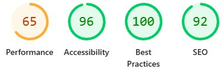

Lighthouse · keystimecharters.com
Mobile LCP: 17.2 s → 2.7 s.
Same site, real-world build, 84% faster.
Before

→
After

Performance
65 → 74
SEO
92 → 100
Page Weight
21.8 MB → 5 MB
Desktop Score
98 Performance